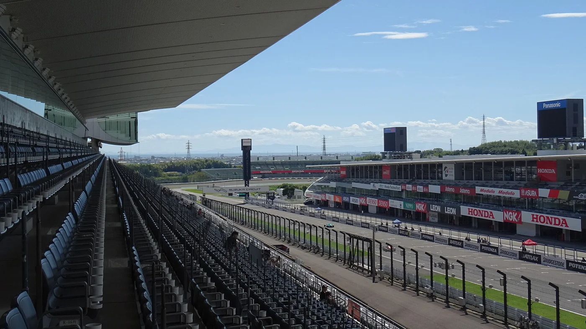
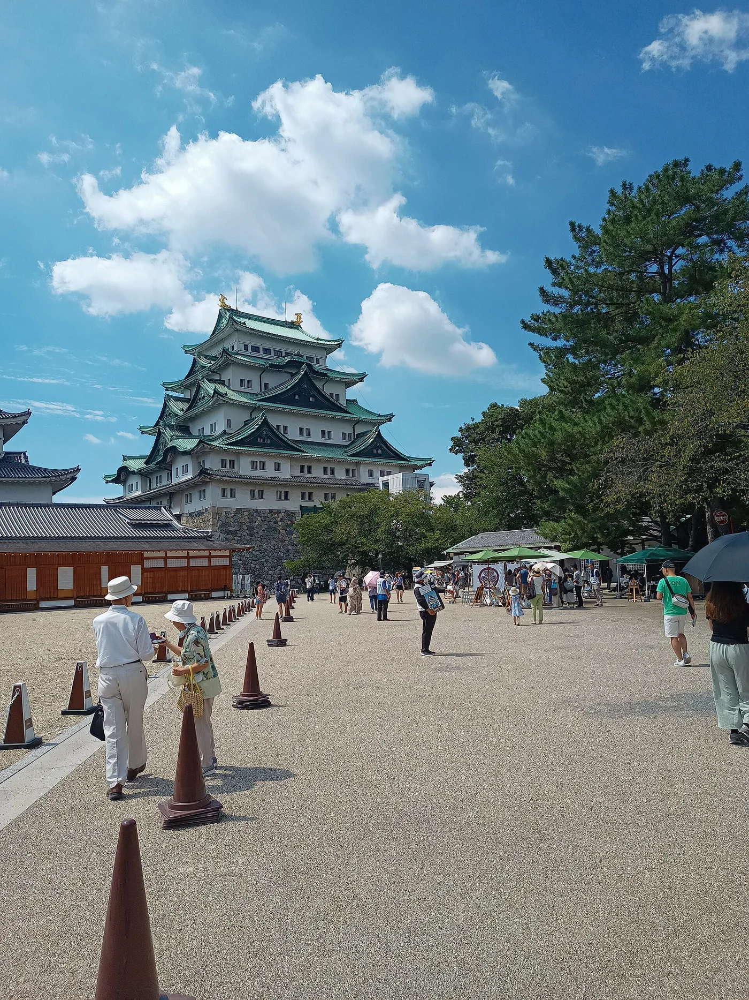

矢场とん · 名古屋站 ESCA 店
味噌猪排，预算 2,000–3,000 日元。名古屋市中村区椿町 6-9，ESCA 地下街，适合住名站的往返动线。
把周日留给 F1 的引擎声。其余几天住在名古屋，逛城赏樱、看汽车工业、去犬山吃田乐，赛后慢慢回酒店。

不换酒店。前两整天做普通旅行，周日只观赛；周一返程留足机场时间。以下钟点是规划建议，航班和巴士订单确认后再锁定。
航线待出发城市确认；优先比较中部国际机场 NGO 往返。五天包含两天抵离，不假设有五个完整游玩日。
纪念馆目前 9:30–17:00、最后入馆 16:30、通常周一休馆，安排在周五。名古屋城门票自 2026-10-01 起成人 1,000 日元；没有沿用英文页未更新的 500 日元。
若出发前确认名古屋城、鹤舞公园的普通樱花已谢，而东山植物园的晚樱仍在开，上午纪念馆和名站午餐照旧；下午改为东山植物园，取消名古屋城与鹤舞公园，不把三处叠加。
园内不同品种接续开放，整体赏樱期通常为 3 月上旬至 4 月下旬，晚樱也不能保证具体某天满开。当前通常 9:00–16:50 开园、16:30 停止入园，周一休园，因此安排周五，不放在返程周一。当前成人票 800 日元/人、两人 1,600 日元；替换名古屋城两人 2,000 日元后，普通景点费由 6,000 调为 5,600 日元，境内小计相应少 400 日元，实际按出发时票价及交通重算。本页计算器默认仍对应名古屋城主线。
东山官方公告与花况 · 开园与最新票价 · 星之丘门地图搜索。票价已按园方当前 800 日元核对，未采用旅游专题旧价 500 日元。2027 夜间特别开放未确认，此备选按日间营业安排。

若下雨或犬山临时限流，将 Day 2 的纪念馆移到今天，Day 2 只逛名古屋城和栄；不会挤占周日正赛。周六冲刺赛与排位赛作为放弃项，本计划只去周日一次赛道。
当天不飞回、不跨城换酒店、不安排犬山或京都。若巴士第 1 时段售罄，优先切到早班近铁＋白子站接驳；更晚巴士需等发车时间公布后验证能否入场就座。
周一不安排通常闭馆的丰田产业技术纪念馆。回程航班未知时，保留相对时间，不能以最快 28 分钟列车时间代替酒店到登机口。
只去周日也按官方前卖观赛票全价计费，不把票价除以三。两人相邻座位要一起选；预算暂按 24 岁以上普通成人票，若适用其他票种再修改。
| 看台 | 每人 / 两人（日元） | 怎么选 |
|---|---|---|
| D-1 / D-2 · 逆倾角 长凳指定席 | 36,400 / 72,800 | 符合“不坐草地”，预算优先首选。选择普通席，不选 Outlet 遮挡折价席。 |
| D-3 / D-4 / D-5 · S 弯 长凳指定席 | 60,600 / 121,200 | 本页预算默认。看连续变向，适合第一次看铃鹿；长凳不等于独立靠背座椅。 |
| Q1-2 · 减速弯 临时独立座椅、有靠背 | 75,000 / 150,000 | 如果希望更舒适的座椅，优先这一档；比默认两人增加 28,800 日元。 |
| V1 · 主看台下层 独立座椅、有靠背 | 112,000 起 / 224,000 起 | 想看发车、维修区氛围时再升级，最终区块价格以官方下单为准。 |
来源：D 区、Q1 区、官方票价总表，核实 2026-10-08。D 区防护网更新可能改变视野，购票前看官方座位视角，不承诺无遮挡。
官方观赛票 11 月 15 日 11:00 日本时间开售，对应北京时间 10:00。提前注册，确认支付方式和虚拟候场规则。
MobilityStation 对部分国家/地区不提供购买；海外卡也可能无法绑定。先检查自己的所在地能否购买，必要时使用官方指向的 F1 Tickets，渠道费用另核算。
销售与支付规则 →名古屋直达巴士 11 月 16 日 10:00 日本时间开放预约，对应北京时间 09:00。4 月 11 日往返 10,000 日元/人，不含 F1 门票。
当前截止为 2027-03-29 23:59 日本时间，满位可能更早。优先早班并同时买往返；本页没有代订任何票。
巴士官方日程与预约入口 →统一比较名古屋酒店 → 铃鹿赛道 → 同一家酒店，2 人往返。国际段均先飞往日本；这里的电车自驾指日本当地租纯电车，非把国内车辆开去日本。
| 方案 | 耗时与费用 | 限制 / 决策 |
|---|---|---|
| 预约直达巴士 · 推荐 | 官方车程单程 2.5–3.5 小时；加酒店步行、集合及入场约 4–5.5 小时（估算）。两人往返 20,000 日元。 | 有座位、减少换乘，但仍受道路拥堵影响；P9 到座位另计，必须提前预约且赶上返程窗口。 |
| 近铁名古屋 → 白子 → 接驳 | 铁路、候车、接驳排队和步行合计单程暂留 3–4.5 小时；两人往返预算占位 12,000 日元，待实际车次及巴士价核算。 | 巴士售罄的备选；特急需另买特急券，普通接驳不保证座位。复核末班与回程排队，必要时提前离场。 |
| 租纯电车 · 条件方案 | 赛时酒店到座位单程暂留 3–5 小时；周六取车、周一还车按 2 个计费日占位，整车约 65,500 日元（下表解释）。 | 驾照须适用日本、车型和充电方式须确认；停车票另购，赛后拥堵与驾驶负担更大。两人这次不优先。 |
首选停车 P10：官方 4 月 9–11 日通票 21,000 日元/车，仅去周日也按整张计。官方列距主入口约 600 米，再加检票与走到 D 区的时间。备选新御园临时停车场：周日票 9,000 日元，最终入口、步行路线和开闭场须从官方停车页确认后使用。
EV 专用 P6 虽列 J1772 充电设施，但官方另有全赛期到场条件；本次只去一天，不据此作为可用首选。不要将“EV 停车场”理解为不限车型、接口或免费充电。
续航方法：名古屋往返铃鹿先按 约 200 公里作保守路线占位，最终以酒店与停车场导航重算；演示能耗 18 kWh/100km，消耗约 36 kWh。出发电量需覆盖这段里程及合理返程余量，车型、电池容量、实际能耗未知时不承诺不充电。
主补能安排在取车点或租车商确认的名古屋充电点；备用快充站在车型与路线确认后通过运营商确定，必须核对接口、支付、营业与绕行。比赛日不依赖未知空桩；需要途中补电时再给具体站点并增加约 45–90 分钟占位缓冲，实际按车辆与排队重算。还车电量规则也要计入。
整车演示预算：租车及保险 18,000 × 2 日 + 过路 5,000 + P10 21,000 + 充电 1,500（含服务费占位）+ 酒店停车 2,000 = 65,500 日元。这是比较估算，非租车报价；其余四天仍走公共交通，因此不能从总预算重复扣掉机场与市内交通。
2027 官方停车价格与条件；取车时间若超过租车商计费边界，重新算租期。
步行到早班巴士集合点，回城后直接回酒店；不用凌晨从栄再转地铁。挑双床或确认两人可入住的双人房，门到集合点尽量 10–15 分钟以内。
预订 4 月 8 日入住、4 月 12 日退房，共 4 晚。预算先放 22,000 日元/间/晚，比赛周末可能明显上浮，实际房价待查。
樱通口同样方便，但比赛早晨要预留穿过车站的时间；伏见只在省下明显房费时考虑，确认早班地铁能赶集合，或计入打车费用。
优先可取消、含税明确、有行李寄存的房。保留赛后 4 月 11 日这一晚；酒店与充电位均未预订，也未保证有空房。
营业信息核实于 2026-10-08；2027 临时休业与菜单价格仍需复核。以下金额为每人每餐预算，非店家确认套餐报价。
味噌猪排，预算 2,000–3,000 日元。名古屋市中村区椿町 6-9，ESCA 地下街，适合住名站的往返动线。
鳗鱼三吃，预算 5,000–7,000 日元。栄 3-30-8，松坂屋南馆 10F，别与地下外带店混淆。
当前 11:00–22:00，最后接单 21:00，通常周二休；周五晚餐留 60 分钟候位，售罄可能提前停接。备选回名站矢场とん；店家信息 · 地图搜索。
味噌田乐、菜饭，预算 1,500–2,500 日元。犬山市犬山北首塚 28-1，从城下町向南走，暂留 30 分钟转场。
当前 11:00–15:00，最后接单 14:30，通常周四休。当天 13:30 前确认能否入座；若满位则缩短城下町，回名站矢场とん连续营业店吃午饭，途中带补给。店家信息 · 地图搜索。
赛道午餐预算 2,000–3,000 日元，饮水与补给另留 1,000 日元。2027 当年餐饮摊位未在本页锁定，公布后按所选看台附近补具体点位。
早餐在酒店或便利店，午餐在发车前完成；晚餐只在回名站后决定。晚归备选是车站周边仍营业的便利店便当，不拿 21:30 的接单时间冒险赶预约。
默认 2 人、1 间房、4 晚。F1 与直达巴士使用当前官方价；酒店、餐饮、其他交通等为预算占位。机票和证件费用未确认，留空时只显示境内小计。
汇率 0.05 是可修改的演示系数，非实时或 2027 预测汇率。切换观赛交通仅作预算比较，五日主线仍以预约巴士为准；租车资格与车型尚待确认。
| 日本境内项目 | 计费口径 | 两人合计（日元） |
|---|---|---|
| F1 观赛票 | 单价 × 2，尚未购票 | 121,200 |
| 酒店 | 1 间 × 4 晚，尚未预订 | 88,000 |
| 餐饮 | 每人每日 × 2 人 × 5 天 | 70,000 |
| 机场 / 市内 / 犬山交通 | 7,000 / 人占位，不含比赛日交通 | 14,000 |
| 比赛日交通 | 2 人直达巴士往返 | 20,000 |
| 普通景点票 | 名古屋城 / 纪念馆 / 犬山城，各 1,000 × 2；出发前复核 | 6,000 |
境内另留 10% 机动金：¥31,920 JPY。
不含购物、国际机场国内段接驳、不同售票渠道手续费、收费行李及未填写的境外项目；下单后按实际含税价补齐。机动金与境内小计分别列示。V1 使用起价，选具体座区后重算。
已确认两人都有有效中国大陆普通护照、常住浙江；你尚未办理日本签证，同行者的签证状态仍需各自核对。以下以 2027 年 4 月 8 日入境、4 月 12 日返程倒排。时间窗口是规划建议，签证与入境规则核实于 2026-10-08，正式申请前再复核。
不用重新办护照。先逐本核对有效期、空白签证页、姓名拼音与损坏情况；确认覆盖整段旅行，并让代办及航空公司检查实际有效期要求，不把“必须剩六个月”写成日本统一规定。
先咨询上海领区指定旅游旅行社，让两人分别做材料预审；确定签证路径后再准备正式材料。初次赴日不等于必须申请多次签证，本次优先咨询单次个人旅游签证。
护照：出国身份证件。
日本签证：赴日所需的适用签证，先审查后签发。
Visit Japan Web：入境审查与海关申报工具，航班和酒店确定后填写，不能代替签证。
若签发电子签：机场查验需要联网打开实时“Visa issuance notice”，截图、PDF 或打印件不能代替。它和入境申报二维码不是同一个东西。外务省电子签说明。
“我们两人持中国大陆普通护照、常住浙江，计划 2027 年 4 月 8–12 日到名古屋旅行，4 月 11 日去铃鹿看 F1。我是首次赴日、未办过日本签证。请按两人的实际情况分别预审，并告知：是否可受理上海领区个人旅游单次签证、实际送签机构、完整材料及流水期间、纸签还是电子签、何时送签、总费用及各项收费、补材料与未获签的处理规则、机票酒店是否允许自行预订及需要什么凭证。”
只向已核实的受理方提交证件材料，别把护照号、流水或电子签链接上传到这份公开攻略。询价不表示已委托或已申请。
F1 门票早于建议送签时间开售。签证资格预审后再决定是否承担不可退门票的损失；正常审核也不能承诺一定获签。酒店的免费取消期限与签证预计结果要能衔接。
普通单次签证有效期基本为签发后 3 个月，以实际签发通知为准；现在做咨询和预审，不急着在 2026 年送签。建议提前约 4–6 周递交，让代办确认春节等休馆安排及材料时效。领馆公布的“最快第 5 个工作日”从正式受理后算，不含旅行社收件、送件、补材料及返还时间，不是全流程五天。有效期说明 · 受理时间说明。
清单仅保存在此浏览器，勾选不表示系统已经预订或签证已经获批。两人的签证结果分别核对；新加入事项默认未完成。
材料不足先按代办反馈补齐，不虚构收入、职业或旅行记录；结果未出时联系受理方确认进度，留意酒店退订期限，不按预计获签日强行锁定不可退机票。更换护照、入境日期或酒店后，核对签证适用性、机票及申报信息是否要更新。
比赛延期或中断时取消赛后堂食，按巴士运营商集合要求处理。机场行李延误不影响 Day 1 必达景点，因为当天没有硬预约。若正赛日期或航班改变，同步调整四晚住宿、交通、餐厅与预算。
赛事、交通与签证核实于 2026-10-08，赏樱参考与东山营业信息核实于 2026-10-09。已核实的是赛事日期、当前票价与公布的交通规则；航班、酒店成交价、2027 天气及餐饮临时安排尚未确定。